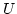
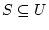
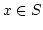
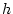
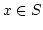
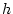

Basic Concepts
Suppose  is a universe of keys.
Let be a hash function that maps the keys from to a given interval of integers .
Let  be a set of  keys from .
Given a key , the hash function  computes an
integer in for the storage or retrieval of
keys from .
Given a key , the hash function  computes an
integer in for the storage or retrieval of  in
a hash table.
Hashing methods for non-static sets of keys can be used to construct
data structures storing
in
a hash table.
Hashing methods for non-static sets of keys can be used to construct
data structures storing  and supporting membership queries
"?" in expected time .
However, they involve a certain amount of wasted space owing to unused
locations in the table and waisted time to resolve collisions when
two keys are hashed to the same table location.
and supporting membership queries
"?" in expected time .
However, they involve a certain amount of wasted space owing to unused
locations in the table and waisted time to resolve collisions when
two keys are hashed to the same table location.
For static sets of keys it is possible to compute a function
to find any key in a table in one probe; such hash functions are called
perfect.
More precisely, given a set of keys , we shall say that a
hash function is a perfect hash function
for if is an injection on ,
that is, there are no collisions among the keys in :
if and  are in and ,
then .
Figure 1(a) illustrates a perfect hash function.
Since no collisions occur, each key can be retrieved from the table
with a single probe.
If , that is, the table has the same size as ,
then we say that is a minimal perfect hash function
for .
Figure 1(b) illustrates a minimal perfect hash function.
Minimal perfect hash functions totally avoid the problem of wasted
space and time. A perfect hash function is order preserving
if the keys in are arranged in some given order
and preserves this order in the hash table.
are in and ,
then .
Figure 1(a) illustrates a perfect hash function.
Since no collisions occur, each key can be retrieved from the table
with a single probe.
If , that is, the table has the same size as ,
then we say that is a minimal perfect hash function
for .
Figure 1(b) illustrates a minimal perfect hash function.
Minimal perfect hash functions totally avoid the problem of wasted
space and time. A perfect hash function is order preserving
if the keys in are arranged in some given order
and preserves this order in the hash table.
| Figure 1: (a) Perfect hash function. (b) Minimal perfect hash function. |
Minimal perfect hash functions are widely used for memory efficient storage and fast retrieval of items from static sets, such as words in natural languages, reserved words in programming languages or interactive systems, universal resource locations (URLs) in Web search engines, or item sets in data mining techniques.
| Home | CHD | BDZ | BMZ | CHM | BRZ | FCH |
Enjoy!